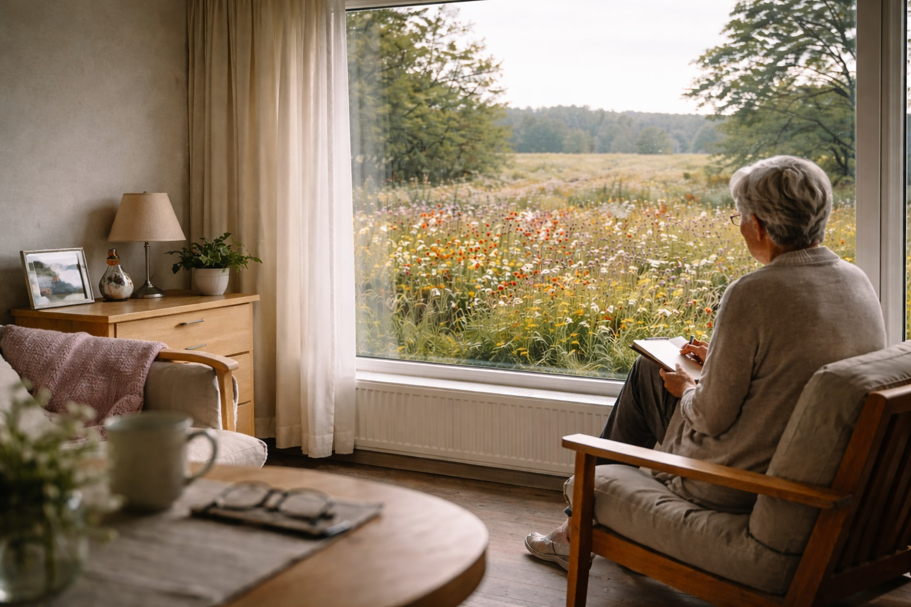

Undervisning
Faglige oplæg, temadage og undervisningsforløb med fokus på høj anvendelighed og tydelig formidling.
Undervisning og faglig formidling
Blomstermarken ApS udvikler og gennemfører undervisning, oplæg og faglige forløb med afsæt i stærke profiler, høj troværdighed og tydelig formidling.

Vi tilbyder undervisning og faglig formidling, hvor indhold, målgruppe og kontekst tænkes sammen. Vores arbejde bygger på faglig substans, høj forberedelse og formidling, der kan bruges i praksis.
Kompetencer
Faglige oplæg, temadage og undervisningsforløb med fokus på høj anvendelighed og tydelig formidling.
Undervisning forankret i solid erfaring, stærke faglige profiler og indhold med reel substans.
Indhold udviklet med blik for målgruppe, organisatorisk kontekst og det konkrete læringsbehov.
Komplekse emner oversat til en form, der er præcis, tilgængelig og anvendelig i praksis.
Mød os

Maja bidrager med sundhedsfaglig tyngde, klinisk erfaring og undervisning med blik for praksis, målgruppe og kvalitet.
Hun underviser med fokus på faglig anvendelighed, tydelighed og sammenhæng mellem viden og hverdagspraksis.

Peter arbejder i krydsfeltet mellem jura, sundhedsvæsen og undervisning og formidler komplekse emner med ro og præcision.
Han underviser i emner, hvor juridisk forståelse, fagligt ansvar og praktiske gråzoner skal omsættes til handling.
Undervisning
Vi tilbyder undervisning, oplæg og faglige forløb, der kan stå alene eller indgå som del af et større læringsforløb. Indholdet tilpasses målgruppe, varighed og formål.
Kontakt
Hjemmesiden er et overblik over vores profil og undervisning. Har du et konkret behov, er du velkommen til at tage kontakt for en uforpligtende drøftelse.